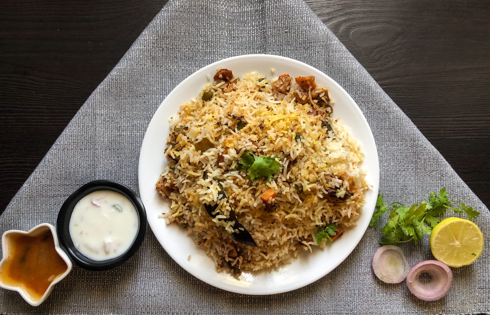

Whats on lunch Today !
Dum Biryani

Ingredients
For the Rice
- Basmati rice - 2 cups
- Water - for soaking and boiling
- Bay leaves - 2
- Cloves - 4
- Green cardamom pods - 4
- Cinnamon sticks - 2-inch pieces
- Salt - to taste
For the Chicken Marinade
- Chicken (bone-in pieces) - 1 kg
- Yogurt - 1 cup
- Ginger paste - 1 tablespoon
- Garlic paste - 1 tablespoon
- Red chili powder - 1 teaspoon
- Turmeric powder - 1/2 teaspoon
- Garam masala powder - 1 teaspoon
- Lemon juice - from 1 lemon
- Salt - to taste
For the Biryani Layering
- Saffron strands - soaked in 2 tablespoons of warm milk
- Fried onions - from 2 large onions
- Chopped mint leaves - 1/2 cup
- Chopped cilantro (coriander) leaves - 1/2 cup
- Ghee (clarified butter) - 2 tablespoons
For Assembling and Dum Cooking
- Cooking oil or ghee - 3-4 tablespoons
- Whole spices (bay leaves, cloves, cinnamon sticks, green cardamom pods) - a few each
- Sliced onions - 1 large onion
- Tomatoes - 2 medium, sliced
- Ginger paste - 1 tablespoon
- Garlic paste - 1 tablespoon
Optional Ingredients:
- Fried cashews and/or almonds - for garnishing
- Raisins - for garnishing
Recipe
Follow the below steps properly
Step 1: Marinate the Chicken
- Clean and wash the chicken pieces thoroughly. Pat them dry with a paper towel.
- In a mixing bowl, combine yogurt, ginger paste, garlic paste, red chili powder, turmeric powder, garam masala powder, lemon juice, and salt to create the marinade.
- Add the chicken pieces to the marinade, ensuring they are well coated. Cover the bowl and let the chicken marinate for at least 2 hours, preferably in the refrigerator.
Step 2: Prepare the Rice
- Wash the Basmati rice under cold water until the water runs clear. Soak the rice in water for about 30 minutes.
- In a large pot, bring water to a boil. Add bay leaves, cloves, green cardamom pods, cinnamon sticks, and salt.
- Drain the soaked rice and add it to the boiling water. Cook the rice until it's about 70-80% cooked (it should still have a slight bite to it). Drain the rice and set it aside.
Step 3: Prepare Biryani Layering Ingredients
- Soak saffron strands in warm milk and set aside.
- Fry the sliced onions until they are golden brown and crispy. Drain them on a paper towel to remove excess oil.
- Chop the mint leaves and cilantro (coriander) leaves. Set aside.
- Prepare the fried cashews and almonds, if using.
Step 4: Assemble and Dum Cooking
- In a large heavy-bottomed pot or a biryani handi, heat cooking oil or ghee over medium heat.
- Add the whole spices (bay leaves, cloves, cinnamon sticks, green cardamom pods) and sauté for a minute until fragrant.
- Add the sliced onions and sauté until they turn golden brown.
- Add ginger paste and garlic paste. Sauté for a couple of minutes until the raw smell disappears.
- Add the marinated chicken pieces and cook for 5-7 minutes until they are sealed (outer layer turns white).
- Layer half of the partially cooked rice over the chicken.
- Sprinkle half of the chopped mint leaves, cilantro leaves, and fried onions over the rice.
- Layer the remaining rice over the herbs and onions.
- Sprinkle the remaining mint leaves, cilantro leaves, and fried onions on top.
- Drizzle the saffron milk over the rice to create a beautiful color and aroma.
- Finally, sprinkle the ghee over the top layer.
Step 5: Dum Cooking
- Cover the pot with a tight-fitting lid or seal it with dough to prevent steam from escaping.
- Place the pot over low heat and cook for about 20-25 minutes. You can place a tawa (griddle) underneath the pot to distribute the heat evenly.
- Alternatively, you can place the sealed pot in a preheated oven at 325°F (165°C) for the same duration.
Step 6: Serve
- Carefully remove the pot from heat or oven
- Gently fluff the biryani with a fork to mix the layers.
- Serve the delicious chicken dum biryani hot with raita, salad, or your favorite side dishes
For Better Understanding Watch This Video ..
Enjoy !